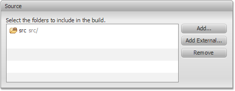
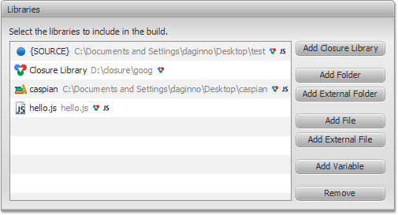
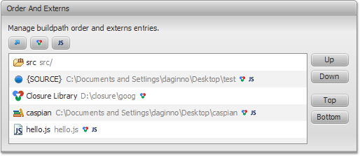

Configure Build Path
In this section, you will learn about configuring Build Path for Closure Compiler in Closure FX Builder.
The build path specifies which
JavaScript source files and resource files in a project are
considered by the Closure Compiler and specifies how to find types
outside of the project. In fact, the build path is a list of paths
visible to the compiler when building the project. The Closure
Compiler compiles the JavaScript source files into the output
folder. The build path is specified for each Build Configuration
i.e. project. You can reach this page on the Compiler page
(Compiler > Build Path) from the Build Configuration file.
Source Section

Source folders are top-level folders which contain .js files to
build. The compiler will compile the contained files to the
output file that will be written to the output folder.
It is highly desirable to place source JavaScript files into Source folders only and separate tests/demos to other folders.
It is highly desirable to place source JavaScript files into Source folders only and separate tests/demos to other folders.
- Adds a new folder to contain source.
 Adds a new folder that links to an
location outside of the project's root folder.
Adds a new folder that links to an
location outside of the project's root folder.- Removes the selected folders from the build path. This does not delete the folders nor their contents.
Libraries Section

On this section, you can add
libraries to the build path.
- Allows to add Closure Library. Closure Libraries can be defined and edited in the Closure FX Preferences > Closure Libraries preference page.
- Allows to navigate the project hierarchy and select a JavaScript folder for the build path. The selection dialog also allows you to create a new folder.
 Allows to navigate the file system
(outside the project) and select a JavaScript folder for the
build path. The selection dialog also allows you to create a new
folder.
Allows to navigate the file system
(outside the project) and select a JavaScript folder for the
build path. The selection dialog also allows you to create a new
folder.- Allows you to navigate the project hierarchy and select JavaScript files to add to the build path.
- Allows you to navigate the file system (outside the project) and select JavaScript files to add to the build path.
- Allows you to add Build Path variables to the build path. Build Path variables are an indirection to folders or files with the benefit of avoiding local file system paths in a buildpath. This is needed when projects are shared in a team. Variables can be created and edited in the Closure FX Preferences > Build Path Variables preference page.
- Removes the selected element from the build path. This does not delete the resource.
Libraries have the following
attributes (presented as icon decorators):
- extern - Specifies a Build Path item as an extern. The externs file/folder should define all external variables, types, and properties that you intend to interact with.
 include Closure-based files - Specifies that the Compiler will
use JavaScript files with goog.provide.
include Closure-based files - Specifies that the Compiler will
use JavaScript files with goog.provide.
- include JavaScript files - Specifies that the Compiler will use JavaScript files without goog.provide (pure/simple JavaScript).
Order and Externs Section

In the Build Path order list, you can click the Up and Down
buttons to move the selected path entry up or down in the build
path order for this new project.
List entries can be marked as extern, include Closure-based files and include JavaScript files. Exported entries are not compiled to the output file. They define APIs outside (or "external") to your code. Closure Library always includes Closure-based files, and can not be changed.
List entries can be marked as extern, include Closure-based files and include JavaScript files. Exported entries are not compiled to the output file. They define APIs outside (or "external") to your code. Closure Library always includes Closure-based files, and can not be changed.
- Specifies a Build Path item as an extern. The externs file/folder should define all external variables, types, and properties that you intend to interact with.
- Specifies that the Compiler will use JavaScript files with goog.provide.
- Specifies that the Compiler will use JavaScript files without goog.provide (pure/simple JavaScript).